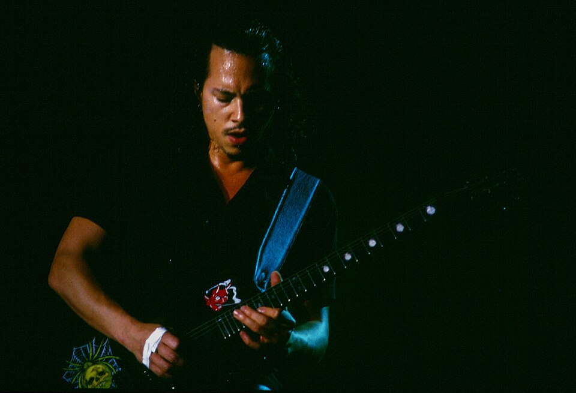
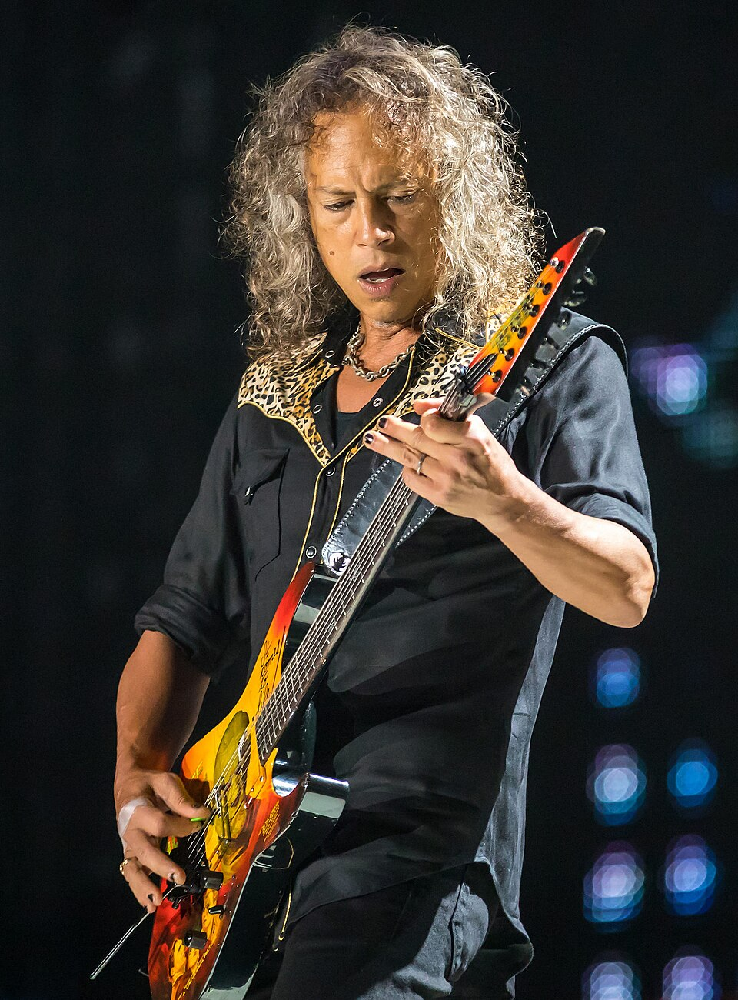
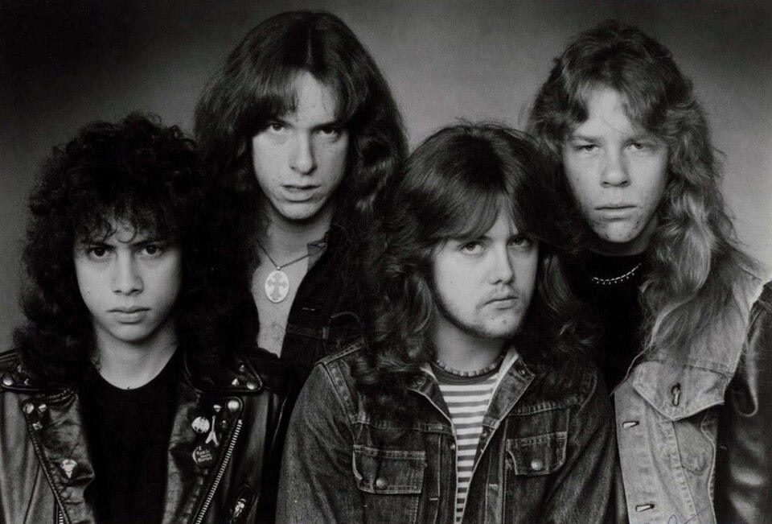

Kirk Hammett
Through hard work.
Dedication.
Some legends are born.

Photo: kjpm / Wikimedia Commons — CC BY 2.0
Kirk Hammett was born on November 18, 1962. He was born in San Francisco, California and raised in El Sobrante. While growing up, Kirk endured a difficult childhood, including a father who struggled with alcoholism and mistreated his family. As Kirk was growing up, he found outlets to deal with his own anger and frustrations. Two passions would eventually become important outlets in his life: horror movies and music. At the age of five, Kirk injured his hand and spent much of his recovery time at home. His parents would often put him in front of the television to keep him occupied, and it was during that time that he developed a lifelong love of horror movies. It is almost hard to believe that one of the most recognizable guitar players in heavy metal began his journey while recovering from a hand injury. Music would soon become his greatest passion, and at the age of fifteen he received his first guitar. At that time he would often raid his brother’s record collection and play along with artists like Jimi Hendrix and Led Zeppelin. He would often lock himself in his room and practice for hours, not only developing his skills as a guitarist but also finding an outlet for his personal struggles.

Photo: Ralph Arvesen / Wikimedia Commons — CC BY 2.0
Once he got older, he wanted to improve even more and sought the help of Joe Satriani in Berkeley, California. While taking lessons he co-founded his first band Exodus. Between the years of 1979 and 1983, Exodus became a prominent band in the bay area thrash scene. It was here that Kirk began developing his approach to songwriting and solo construction, while also sharpening his rhythm playing and learning how to command a crowd night after night. These were the skills that would prepare him for the opportunity waiting for him with Metallica. During the Kill 'Em All era, Kirk joined Metallica after Dave Mustaine's departure from the band, stepping into a role that would change the future of heavy metal. As Metallica continued to evolve, Kirk had the opportunity to showcase his unique style on ...And Justice for All, delivering solos that helped define the band's expanding sound. Through the years, track after track, Kirk continued blending blues-inspired pentatonic phrasing with heavy metal aggression, influencing generations of musicians along the way. From jamming alone in his room as a way to escape difficult moments, Kirk Hammett has gone on to play across the world for decades, inspiring countless musicians to pick up a guitar and discover the same passion that shaped his own journey.

Kirk Hammett & Cliff Burton — Metallica 1983 press photo
Distributed by Megaforce Records —
Wikimedia Commons
Public domain (U.S.)
Explore the stories behind the music. Discover the legends who reshaped our musical landscape.